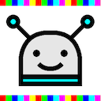
Colorobo
Description
Colorobo est un jeu où on doit amener une tête de robot sur une cible. Chaque fois qu'on y arrive on gagne un point, la cible et le robot changent alors de place. Le but est de gagner le plus de points possible avant que le temps soit écoulé.

Le robot se déplace sur une roue colorée et peut aller dans 4 directions : le rouge (en haut), le bleu (à gauche), le jaune (à droite), le blanc (au centre).
Pour déplacer le robot, il faut taper sur une couleur, le robot se déplace alors vers cette couleur. Si la couleur a la tête en bas, le robot se déplacera dans la direction opposée à cette couleur.
Si on tape plusieurs fois de suite sur la couleur, le robot se déplacera de plusieurs cases. Si par erreur on tape sur un crane, deux cases de la roue colorée seront condamnées. Si six cases sont condamnées et qu'on tape à nouveau sur un crane, un point est perdu et la cible et le robot changent de place.
On débute la partie avec 40 secondes au chrono. On peut gagner du temps en tapant sur une horloge (+1s par tape), en mettant le robot sur la cible (+2s).
- Roue colorée
 Tête de robot à déplacer
Tête de robot à déplacer Cible
Cible- Case condamnée
 Déplace le robot dans la direction du rouge
Déplace le robot dans la direction du rouge- 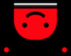Déplace le robot dans la direction opposée au rouge
- 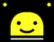Déplace le robot dans la direction du jaune
 Déplace le robot dans la direction opposée au jaune
Déplace le robot dans la direction opposée au jaune Déplace le robot dans la direction du bleu
Déplace le robot dans la direction du bleu Déplace le robot dans la direction opposée au bleu
Déplace le robot dans la direction opposée au bleu Déplace le robot dans la direction du blanc
Déplace le robot dans la direction du blanc Déplace le robot dans la direction opposée au blanc
Déplace le robot dans la direction opposée au blanc- 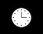Ajoute du temps
 Condamne deux cases
Condamne deux cases
Sur l'écran d'accueil, on peut regarder le tutoriel, choisir la langue (anglais ou français) et choisir le mode. En effet, on peut jouer en mode classique avec les couleurs rouge jaune bleu (mode RYB), mais également avec les couleurs rouge vert bleu (mode RGB) ou cyan mangenta jaune (mode CMY).
- 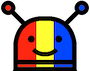Mode : rouge jaune bleu
- 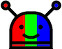Mode : rouge vert bleu
- 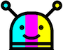Mode : cyan magenta jaune
- 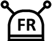Langue : français
 Langue : anglais
Langue : anglais Tutoriel
Tutoriel
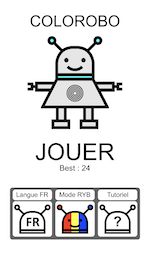

 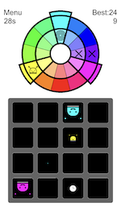
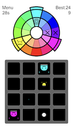
Gestion des données personnelles
Les seules données stockées sont relatives à la configuration courante (meilleur niveau, dernier mode utilisé, anglais ou français). Elles ne sont ni exploitées ni envoyées à personne. Elles sont effacées si on supprime l'application.